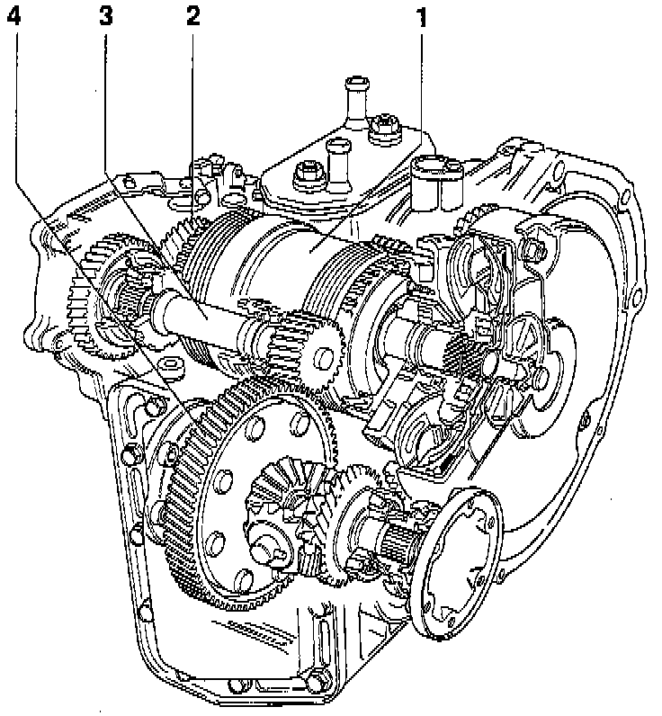

Repair Overview

1 - PLANETARY GEAR
- Disassembling and assembling, refer to Planetary Gearbox Disassembly/Assembly. Service and Repair
2 - INPUT GEAR
- Removing and installing Input Gear
- Adjusting final drive (overview)
- Adjusting Input Gear
NOTE: Repairs on the input gear can only be performed after the component parts of the planetary gear have been removed.
3 - DRIVE PINION
- Removing and installing Drive Pinion
- Adjusting Drive Pinion
- Adjusting final drive (overview)
4 - DIFFERENTIAL
- Removing and installing Differential
- Disassembling and assembling Differential
- Adjusting Differential
- Adjusting final drive (overview)